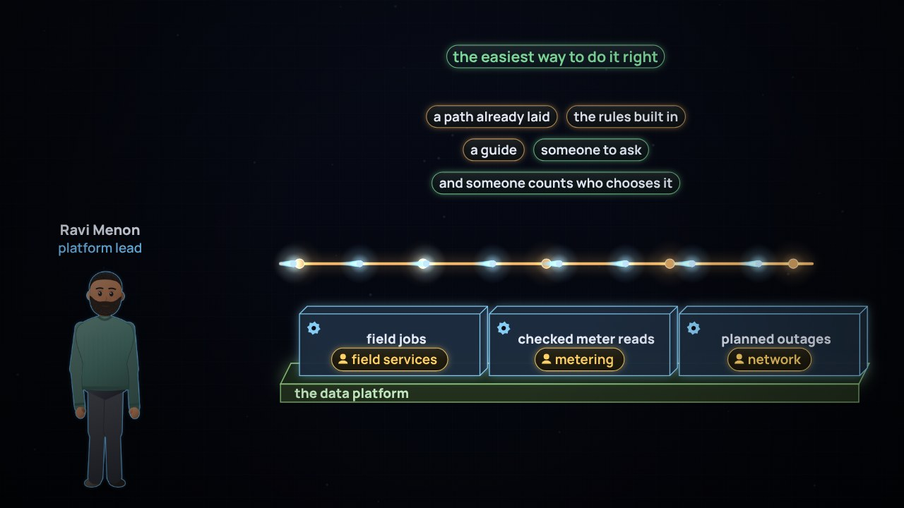

← Previous · Film 7 of 8
A road people choose
A platform teams choose: a path already laid, the rules built in, a guide, and someone to ask.
Topics › Enterprise architecture › Platform and solution architecture
At the utility, the storm tool's maker ends its support, with twelve years of storms inside, in a format only it can read. Ravi Menon builds so any part can change: open formats and seams, a stage and a date for every part, and a way out, tested each year.
Pause and think is on: the film stops for one question at the end of chapters.
Download the videoCaption filesRead the script
Where next?
The three Pause and think questions, for a class or a team. Open one to see the answer.
Film 8 of 8.

← Previous · Film 7 of 8
A platform teams choose: a path already laid, the rules built in, a guide, and someone to ask.

Next series · AI and continuous architecture →
A chat nobody put on the map agreed 212 payment plans. Each agent goes on it: a role, its tasks, an identity and someone who answers.